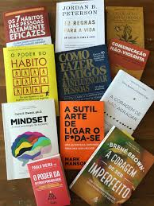

Compre agora
R$19.90
Chega de tentar buscar um sucesso que só existe na sua cabeça. Chega de se torturar para pensar positivo enquanto sua vida vai ladeira abaixo. Chega de se sentir inferior por não ver o lado bom de estar no fundo do poço.
Ver livros relacionados.»Você fica mais inteligente quando lê muito, e também melhora a escrita e seu vocabulário. Disso você já sabe. Outra habilidade que se desenvolve mais é a da criatividade: quando lemos um livro em estilo romance, por exemplo, a capacidade de imaginar o cenário em que a ação se desenvolve, além da imagem física dos personagens, leva a criar um outro mundo dentro de nossas cabeças.
Por que o mundo é como é? Por que você pensa como pensa? Perguntas do tipo são comuns quando você começa a questionar a vida e a sociedade, ou seja, quando começa a desenvolver seu senso crítico. O mais incrível da literatura é que, nos introduzindo a realidades e épocas diferentes, ela acaba suscitando reflexões que talvez não teríamos se ficássemos sempre presos ao nosso cotidiano e à nossa rotina fixa. Ler abre a mente, e isso pode te tornar uma pessoa melhor.
Acorde para os objetivos que quer conquistar. Já aconteceu a você de se olhar no espelho e não gostar daqueles quilos a mais? De observar seu momento profissional somente com frustração? De se sentir desconectado dos seus familiares, dos seus amigos? Se você acha que essas são situações normais, pense de novo! Só porque isso acontece com várias pessoas não quer dizer que a vida deva ser assim. Só porque algo se torna comum, não significa que seja normal! Neste livro, Paulo Vieira lhe convida a quebrar o ciclo vicioso e iniciar um caminho de realização. Para isso, ele apresenta o método responsável por impactar 250 mil pessoas ao longo de sua carreira - e que pode ser a chave para o que você tanto procura.
Leia mais »A escola prepara as crianças para o mundo real? Essa é a primeira pergunta com a qual o leitor se depara neste livro. O recado é ousado e direto: boa formação e notas altas não bastam para assegurar o sucesso de alguém. O mundo mudou; a maioria dos jovens tem cartão de crédito, antes mesmo de concluir os estudos, e nunca teve aula sobre dinheiro, investimentos, juros etc. Ou seja, eles vão para a escola, mas continuam financeiramente improficientes, despreparados para enfrentar um mundo que valoriza mais as despesas do que a poupança.
Leia mais »“Nunca confie em alguém que não arrisca a própria pele”, diz Taleb. Por que não devemos escutar pessoas que só falam em vez de agir? Por que empresas entram em falência? Por que existem mais escravos hoje do que nos tempos romanos? Por que impor a democracia em outros países nunca funciona? A resposta: muitas das pessoas que estão no comando do mundo não arriscam a própria pele.
Leia mais »